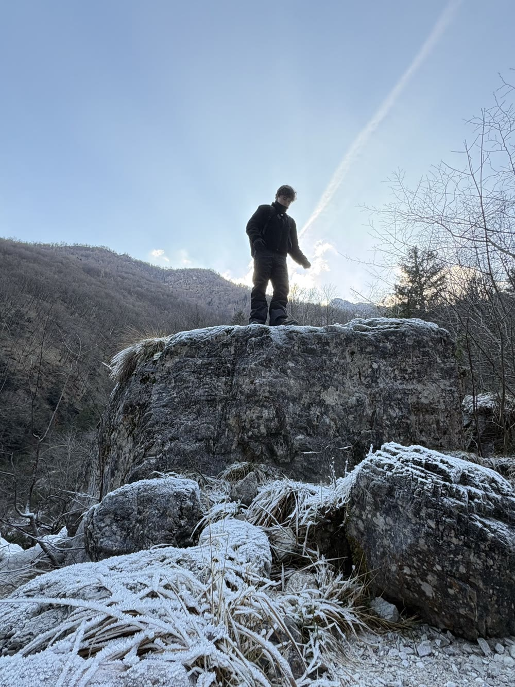

Yente Vanhoudt

A passionate Digital Experience Design student
exploring web, graphic & 3D design.
About
Yente
A drive to design digital experiences that feel thoughtful, intuitive and alive.
As a Digital Experience Design student, I've built a broad foundation across web design, graphic design and 3D design — learning to move fluidly between screen, print and space while keeping every detail intentional.
Services
What I do
-
01
3D Design
I love working with light and objects in Blender, building scenes and renders that feel alive.
-
02
Web Design
I design and build websites that balance clean layout, smooth interaction and considered front-end detail.
-
03
UI/UX Design
I design interfaces that are easy to use and pleasant to spend time in, grounded in how people actually behave.
Work
Latest Projects